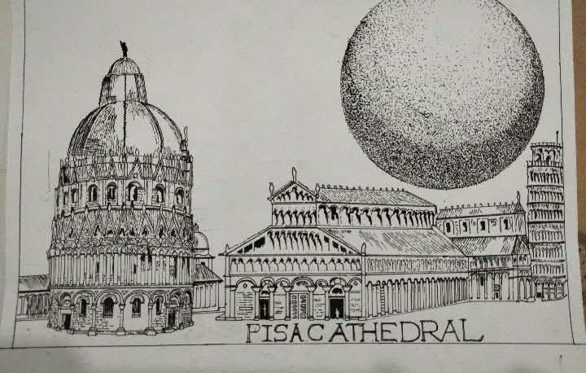
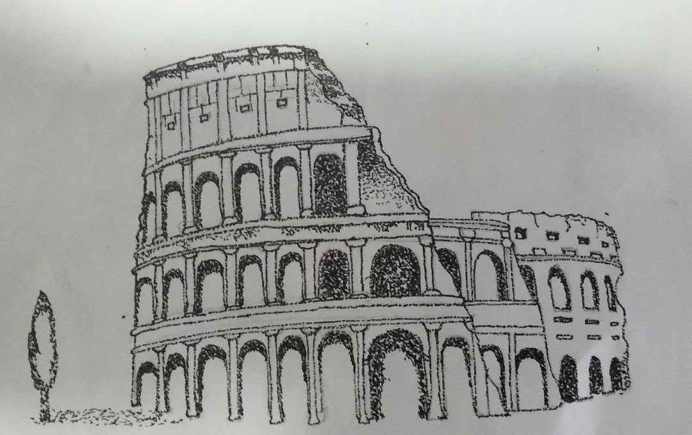
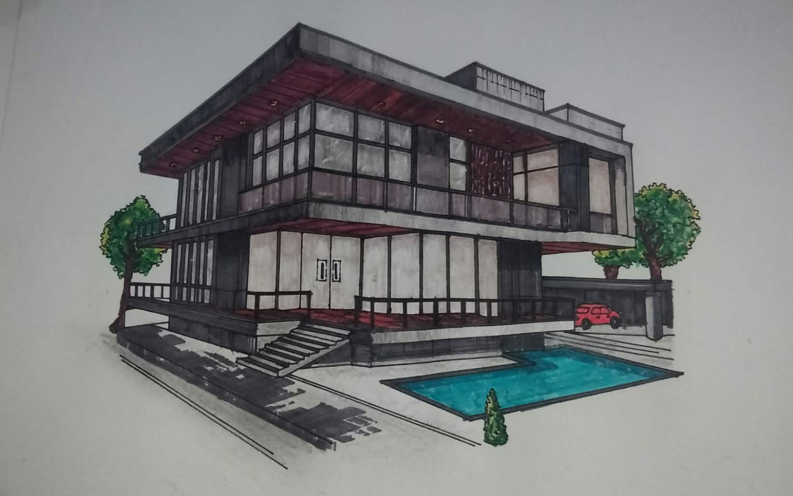
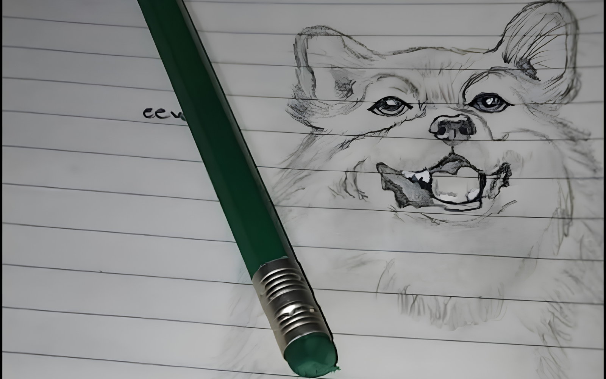
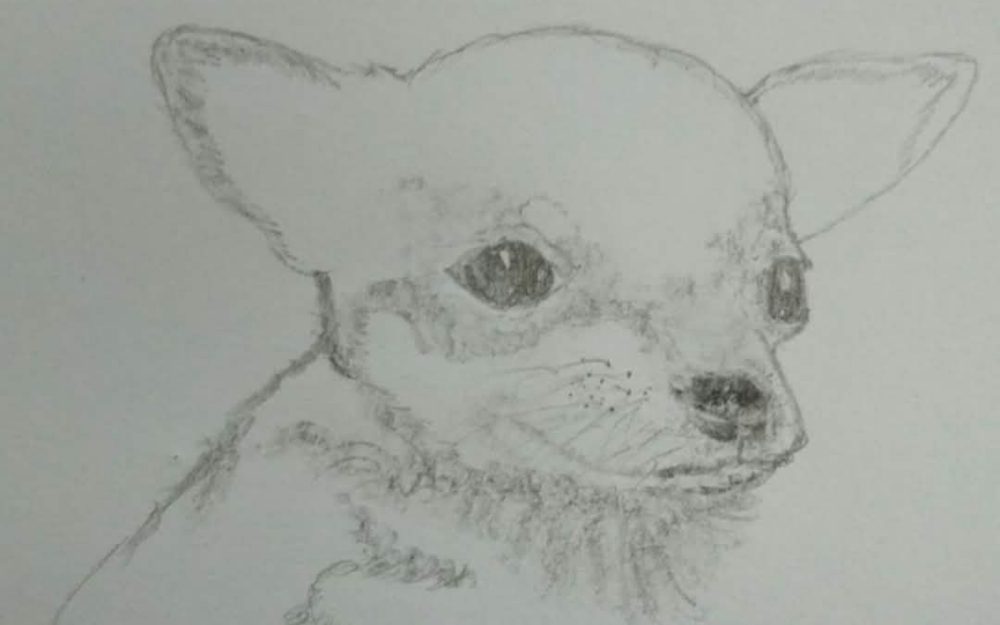
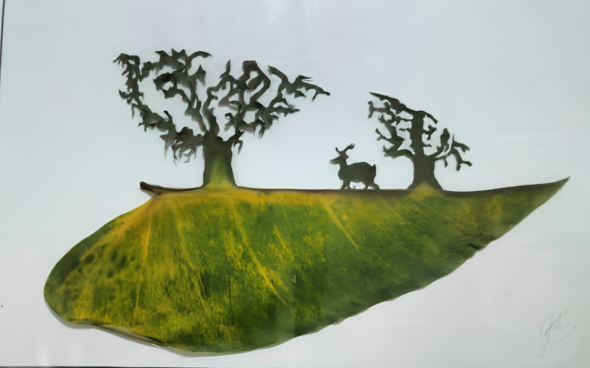
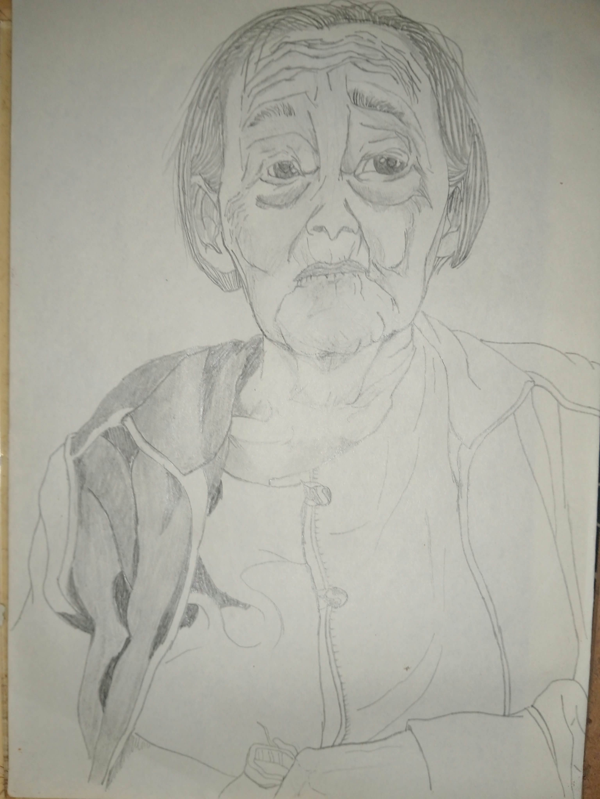
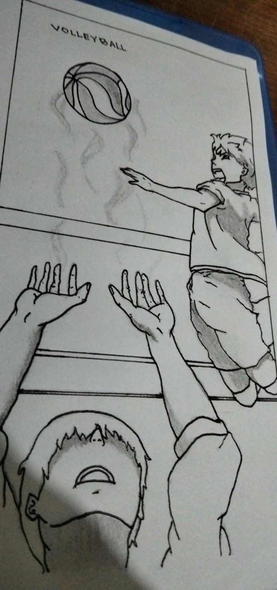

Pisa Cathedral Pointilism
Pisa, Tuscany, Italy.
Arts in Everywhere.

Pisa, Tuscany, Italy.
Arts in Everywhere.

Rome, Italy.
Arts in Everywhere.

Villa, Homa.
Structural.

Dogs.
I love Animals.

Puppy.
I Love Animals.

Leaf Art.
Carve.

Grandmother
Portraying People.

Haikyuu
Anime.
Frontliners.
Thank you for your service.